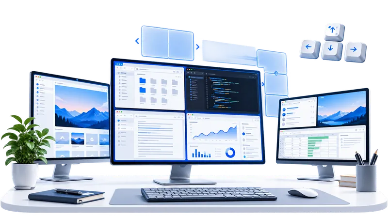

절반·사분면 배치
단축키 한 번으로 창을 깔끔하게 정리
Tessdeck은 단축키 한 번으로 윈도우 창을 절반, 사분면, 3분할에 배치해 주는 가볍고 빠른 창 관리 프로그램입니다.

단축키 한 번으로 창을 깔끔하게 정리
더 유연한 작업 환경을 위한 3분할 지원
원하는 단축키로 자유롭게 설정
여러 모니터에서 손쉽게 창 이동
시스템 리소스를 거의 사용하지 않음
Tessdeck은 복잡함을 줄이고, 필요한 기능만 빠르게 꺼내 쓸 수 있도록 설계했습니다.
마우스를 끌지 않아도 단축키 한 번으로 절반, 사분면, 3분할 위치에 창을 붙입니다.
자주 쓰는 배치마다 원하는 조합을 지정하고, 충돌 여부도 바로 확인할 수 있습니다.
현재 창을 다음 또는 이전 모니터로 옮긴 뒤 같은 위치에 자연스럽게 배치합니다.
배치 전 창의 위치와 크기를 기억했다가 단축키 한 번으로 되돌립니다.
알림 영역에 조용히 상주하면서 설정과 자동 시작 기능에 빠르게 접근할 수 있습니다.
설치 파일을 실행하면 바로 사용할 수 있습니다. 별도의 개발 환경이나 런타임 설치가 필요 없습니다.
원하는 창에서 단축키만 누르면 됩니다.
원하는 레이아웃에 맞는 단축키를 누르세요.
활성 창이 선택한 영역에 정확하게 붙습니다.
정돈된 화면에서 흐름을 끊지 않고 바로 작업을 이어가세요.
설정부터 실제 창 배치까지 복잡한 설명 없이 한눈에 확인할 수 있습니다.
기능별 단축키를 직접 지정하고 바로 저장합니다.
자주 쓰는 설정과 기능을 빠르게 열 수 있습니다.
세 개의 창을 한 화면에 균형 있게 배치할 수 있습니다.
일반 설치와 사용에는 관리자 권한이 필요하지 않습니다. 다만 관리자 권한으로 실행 중인 다른 프로그램의 창을 옮기려면 Tessdeck도 관리자 권한으로 실행해야 합니다.
네. 윈도우 10과 윈도우 11을 지원합니다.
설정 화면에서 다른 조합으로 변경할 수 있고, 충돌한 단축키도 확인할 수 있습니다.
Windows 설정 → 앱 → 설치된 앱 → Tessdeck for Windows에서 제거할 수 있습니다.
네. 현재 초기 공개 릴리스는 코드 서명 준비 중이라 Windows에서 알 수 없는 게시자 또는 SmartScreen 경고가 표시될 수 있습니다. 설치 파일과 함께 SHA-256 체크섬을 제공하며, 코드 서명이 연결되면 이후 릴리스부터 서명된 설치 파일로 전환합니다.
다운로드 전에 Windows 보호 화면 안내를 먼저 확인할 수 있습니다.